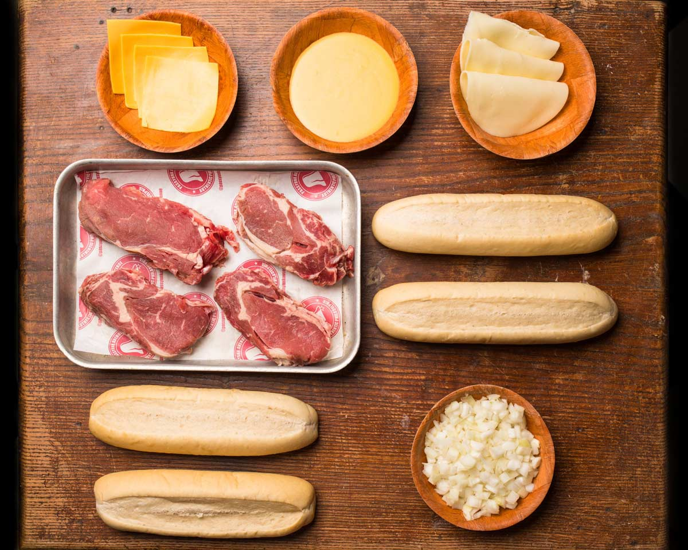

Un sandwich con carne y queso, cualquier otra cosa es secundario.
Ingredientes
4 cucharadas de aceite vegetal, dividido
1 cebolla blanca, partida a la mitad y cortada en laminas finas
1 pimiento rojo, cortado en laminas finas
1 pimiento verde, cortado en laminas finas
De 1 a 1.5 kilos de solomillo, cortado en laminas finas
1 cucharadita de sal, dividido
1 cucharadita de ajo en polvo, dividido
8 marraquetas
6 cucharaditas de mantequilla ablandada
200 gramos de queso Provolone en laminas

Pasos
Antes de empezar, colocar la carne en el congelador por alrededor de 20 a 30 minutos. Esto ayudara a que sea mas facil cortarla.
Añadir 2 cucharadas de aceite vegetal a un sarten grande y colocar sobre fuego medio-bajo. Añadir cebolla y pimientos. Dejar que se cocine, revolver ocasionalmente, hasta que este tierno. Si empiezan a dorarse, bajar el nivel del fuego. Mientras los vegetales se cocinan, preparar la carne, regresando para revolver de vez en cuando
Remover la carne del congelador y colocarla sobre una tabla para cortar. Usar un cuchillo afilado para recortar los bordes del exceso de grasa y rebanar lo mas delgado posible a traves del grano. Cortar la carne rebanada en trozos pequeños. Revisar los vegetales periodicamente mientras prepara la carne.
Cuando los vegetales esten tiernos, transferirlos a un plato y regresar el sarten a fuego medio-alto, añadir aceite adicional. Añadir la mitad de la carne cortada y cocinar, revolviendo frecuentemente, por cerca de 4 a 5 minutos, o hasta que ya no se vea rosado. Sazonar con media cucharadita de sal y ajo en polvo mientras se cocina. Transferir la primera porcion de carne a el plato con la cebolla y los pimientos, dejando el jugo de la carne en el sarten. Añadir aceite adicional, si lo requiere, y repetir con el resto de la carne.
Precalentar horno a 204 grados C.
Abrir las marraquetas pero no separarlas. Untarlas con la mantequilla blanda y colocarlas sobre una bandeja para hornear. Transferir la bandeja al horno y hornear por 3 a 5 minutos o hasta que esten ligeramente doradas y tostadas
Escurrir todo el jugo del sarten y regresarlo a la estufa. Añadir toda la carne y los vegetales. Colocar las laminas de queso sobre la mezcla en un circulo y tapar el sarten. Cocinar en fuego medio hasta que el queso se derrita, por cerca de 4 a 5 minutos, luego revolver y usar tenazas para transferir a las marraquetas tostadas.